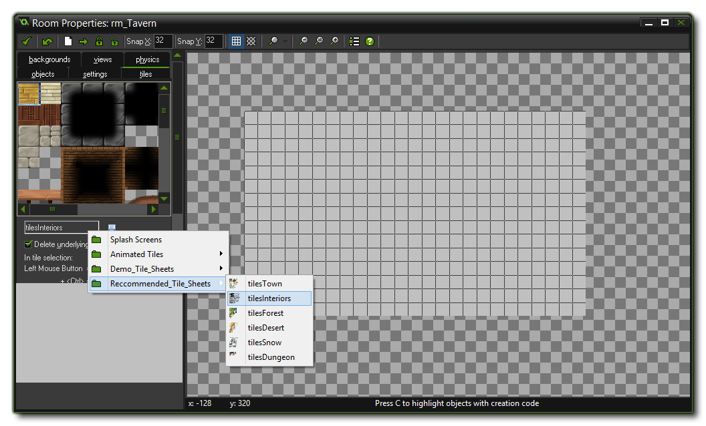
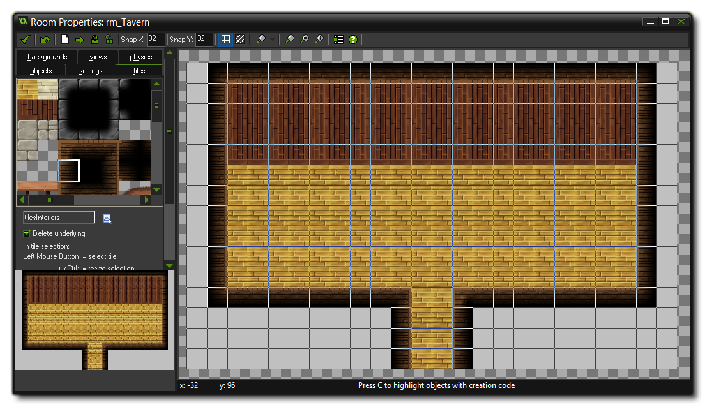
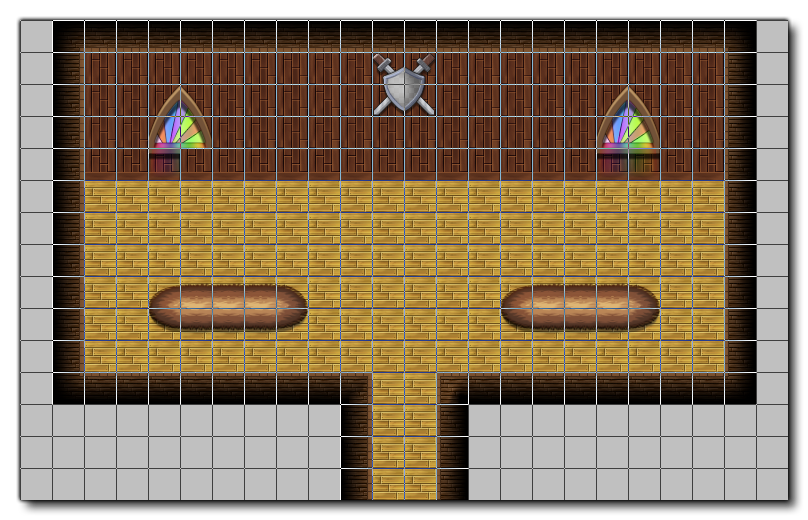
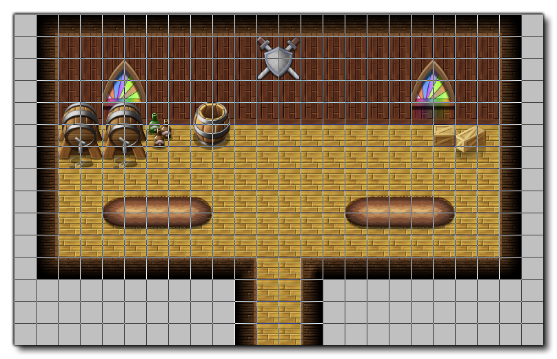
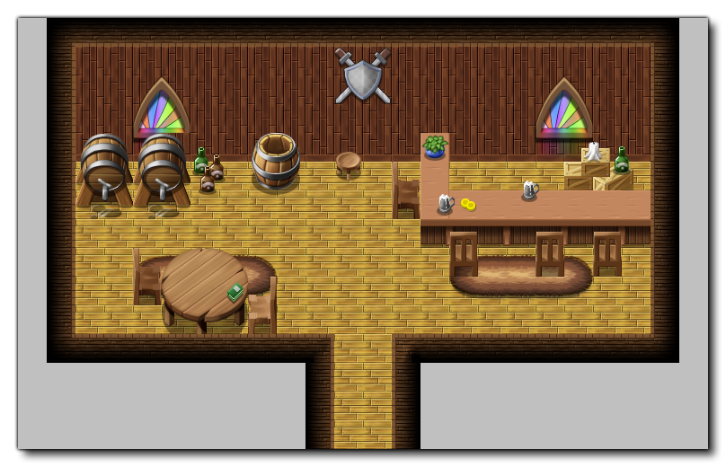
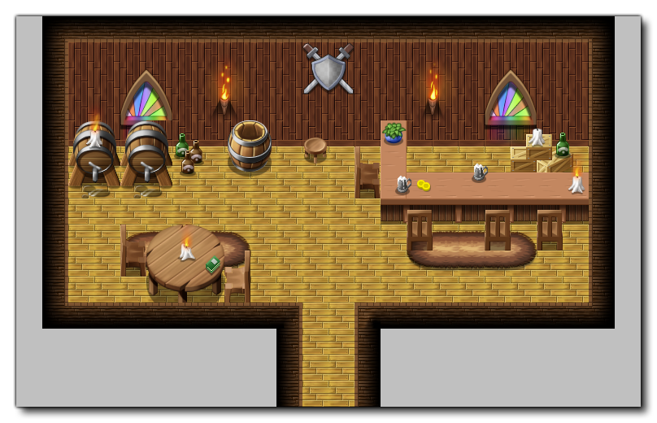
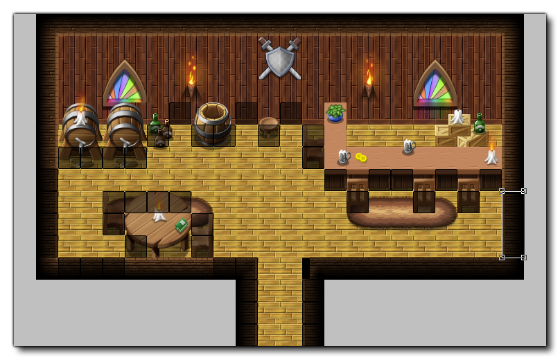
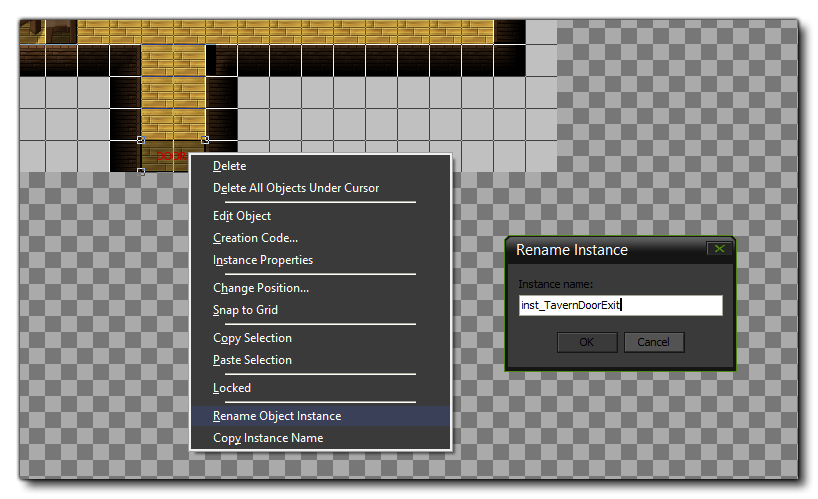

In this section, we will look at creating game areas (rooms). This section will concentrate mainly on the initial setup objects required and the placing of tiles as well as the creation of
animated tilesets.
If you look at the main "over-world" room, rm_TownNew, you will see that there is a building to the left that has the door blocked by an NPC. We are going to move that character and open this
building to the player to explore, which requires us to add a new room to the game where we can create the area that we want to represent the inside of this building.
Since we are making a aTavern and the building we are going to use from the town is a long one, you need to make a new room, call it "rmTavern" and set it to be 768x480 pixels in size.
You will also need to set the room speed to 60. We could set out background colour to black too, but we will leave it as the default grey for now, as we will be adding "wall" blocks to define the play area and
they are black, making it difficult to see if we misplace them if we change the background colour now. You should also tick the persistent flag for the room so that any changes made to the instances it
contains are perpetuated when the player leaves and enters.
With that done, our first task is to lay down the tiles for the walls and the floor...
To add the walls and floors (and later, other elements) we need to pick a Tile set to use. There are multiple tile sets to choose from that come bundled with the YoYo Games RPG engine, and more can be
bought from the GameMaker: marketplace, but for our tavern we need to use the Interior Tiles from the "Recomended_Tile_Sheets" as shown by the image below:

Once you have selected the tile sheet, it's time to start to "paint" the background of the room with them. All tiles are added to a room at different depths, and managing these depths is very important to
the final look of your game. GameMaker: Studio draws things with a higher depth first, and a lower depth second, so you want to add tiles to your room from the highest depth to the lowest. That's why we are going
to start with the walls and floors, as they will appear under everything elese.
You can set the depth from the "Tiles" tab (scroll the tab down a bit if you can't see it), but for the initial layer this is unnecessary as the default depth of 1000000 is fine. You can now start to add the walls and
floor tiles for your tavern. If you are not sure which ones to use, open the room "rmWeaponShop and look at how the tiles have been laid down there. After adding the walls and floor, the room should look
something like this:

While we are on this layer, we can also add some decoration to our tavern, as there are tiles for that too. Make sure that you have un-ticked the "Delete Underlying" option in the tiles settings for the rooms,
as this will enable you to "stack" tiles in the same layer, and add some details so the room looks a bit like this:

You can now go ahead and add further elements to your tavern working from back to front to layer things correctly. To make this layering easier, you can create a new layer of tiles for each level of depth that you want
to add, so add another layer now at a depth of 900000 so that it will appear over the floor and wall tiles.
On this new layer we want to add the next set of tiles, like some barrels or crates, against the back the wall. Note that you can press the <ALT> key to stop the tiles snapping to the grid resolution,
which permits you to create more natural and "organic" backgrounds.

You can now continue to add layers and tiles (decreasing the layer depth each time) until you get a room that looks like this:

One of the features of the YoYo Games RPG Engine is that it permits you to use animated tilesets. These are controlled by a couple of specific scripts which are explained in the section on
Animation. So, since you are adding a tavern, let's add some candles and a torch or two to the place to give it some ambience.
You will need to add a new tile layer below the ones you created for the basic room and its elements, then browse to the tile folder marked "Animated Tiles", then "Torches". From there you can pick
a tileset to use (using different ones will mean that each item animation will start on a different index and so all will appear to be unique), and start to add tiles. Your room should now look a bit like this:

The new area is almost complete, but we still haven't defined the areas that the player and NPC characters can move around in. For that we need to add our invisible wall objects, so go to the "Objects" tab in the
room editor and select the object "objWallSquare" from the "Obstacles" folder. You should now paint the room with these objects to create an area for the characters to move around in. The image
below shows an example of how this should look:

Note that we don't need to outline the whole room around the edges or anything like that. If you check the image above, you can see that we have only placed wall objects to create an area around the visible
floor that the player can move in.
When you are happy with the results you can set the room background colour to black now, as we won't be adding any further wall objects.
Our new area complete now (graphically), but we still have to connect it to the game world and permit the player to enter and leave the room, just like any other area in the RPG. For that we need to add a door
instance to the room, specifically an instance of "objBlank" from the "Transit" folder of objects. This is an invisible object that detects the player collision and goes to the appropriate room. However
for that we need to give it a name and some instance creation code (you can find out more on these subjects from the section on Core Concepts).
Add an instance of this object to the bottom of the room where the tavern entrance is, then right-click on it and select "Rename Object Instance", naming it "inst_TavernDoorExit"

You then need to right click on it again and select "Creation Code", which will open up the code editor where you should add the following:
targetRoom = rmTownNew;
targetDoor = inst_TavernDoorEnter;
Here we tell the door which room it connects to, and then which specific door in that room it connects to. The connecting door doesn't exist yet, however, so let's go ahead and fix that.
Open the room "rmTownNew" and go to the area to the left where the big house is with the NPC standing outside. Move the NPC character to another part of the room and then right-click on the door object
that was behind him, setting the instance name to "inst_TavernDoorEnter". We then need to add the following creation code:
targetRoom = rmTavern;
targetDoor = inst_TavernDoorExit;
You can go ahead and test the game now, checking that the room is accessible from the overworld and the the defined area for the player to move in is adequate. Leave and enter a couple of times to make sure that
you are happy everything works and looks as it should.
In the next section we will look at adding some instances to this room, including a barkeeper with a shop and an NPC to give you a quest!